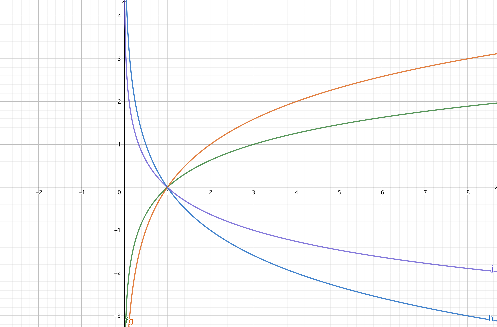
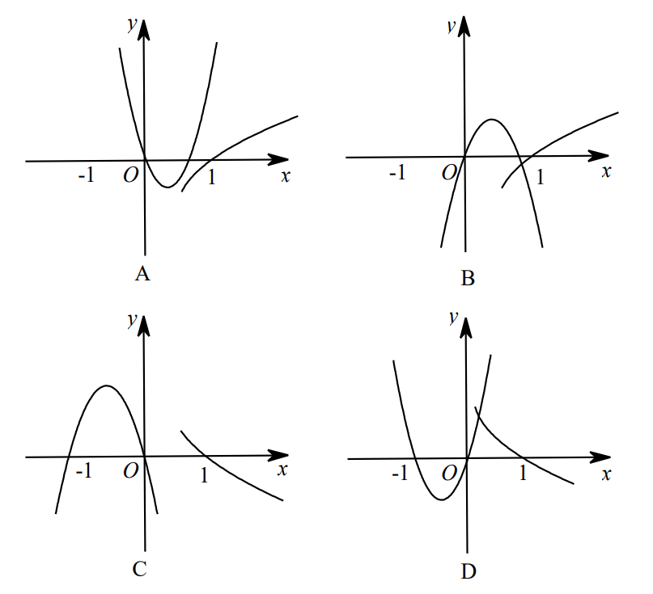

曲线 \(f,g,h,j\) 分别是 \(f(x)=\log_ax,g(x)=\log_bx,h(x)=\log_cx,j(x)=\log_dx\) 的图像, 判断 \(a,b,c,d,1\) 的大小关系. 
函数 \(y=a x^{2}+b x\) 与 \(y=\log _{\mid \frac{b}{a}} x \quad(a b \neq 0,|a| \neq|b|)\) 在同一直角坐标系中的图象可能是: 
比较大小: \(\log_{0.3}5~~~~\log_0.36\) ; \(\log_{0.3}6~~~~\log_{0.2}6\) ; \(\log_{3}{1\over5}~~~~\log_{1/2}2/3\) ; \(\log_{1\over3}{1\over4}~~~~\log_{1\over2}{2\over3}\) ; \(n>1, \log_n(n+1)~~~~\log_{n+1}(n+2)\) .
(1)设 \(a=\log _{3} \pi, b=\log _{2} \sqrt{3}, c=\log _{3} \sqrt{2}\) , 则（） A. \(a>b>c\) B. \(a>c>b\) C. \(b>a>c\) D. \(b>c>a\) (2) 函数 \(f(x)=\left\{\begin{array}{l}\log _{2} x, x>0 \\ \log _{\frac{1}{2}}(-x), x<0\end{array}\right.\) , 若 \(f(a)>f(-a)\) , 则实数 \(a\) 的取值范围是（ ) A. \((-1,0) \cup(0,1)\) B. \((-\infty,-1) \cup(1,+\infty)\) C. \((-1,0) \cup(1,+\infty)\) D. \((-\infty,-1) \cup(0,1)\) (3)设 \(a>0, a \neq 1\) , 函数 \(f(x)=\log _{a}\left|\frac{1-x}{1+x}\right|\) 在 \((1,+\infty)\) 上单调递减, 则 f(x) 满足（ ) A. 在 \((-\infty,-1)\) 上单调递减, 在 \((-1,1)\) 上单调递增 B. 在 \((-\infty,-1)\) 上单调递减, 在 \((-1,1)\) 上单调递减 C. 在 \((-\infty,-1)\) 上单调递增, 在 \((-1,1)\) 上单调递增 D. 在 \((-\infty,-1)\) 上单调递减, 在 \((-1,1)\) 上单调递减
(1) 若 \(f(x)=\frac{1}{\sqrt{\log _{\frac{1}{2}}(2 x+1)}}\) , 求 \(f(x)\) 定义域, 值域, 单调性. (2.1) 已知 \(x \in[1,8]\) , 求函数 \(g(x)=\left(\log _{2} \frac{x}{2}\right)\left(\log _{2} \frac{x}{4}\right)\) 的值域. (2.2) \(f(x)=2+\log_3x(x\in[1,9])\) , 求 \(y=[f(x)]^2+f(x^2)\) 的值域. (3) (2010 湖北文数) 已知函数 \(f(x)=\left\{\begin{array}{l}\log _{3} x, x>0 \\ 2^{x}, x \leqslant 0\end{array}\right.\) , 则 \(f\left(f\left(\frac{1}{9}\right)\right)=\) A. \(4\) B. \(\frac{1}{4}\) C. \(-4\) D. \(-\frac{1}{4}\)
求下列函数的反函数: (1) \(f(x)=3x+2\) ; (2) \(f(x)=3\times 2^{x+1}\) ; (3) \(f(x)=x^2+1\) , \(x\in [-3,0]\) ; (4) \(y=\dfrac{6x+5}{x-1}, x\in\mathbb{R}, x\notin1\) .
给定实数 \(a(a \neq 0,1)\) , 设函数 \(y=\frac{x-1}{a x-1}\left(x \in \mathbf{R}\right.\) 且 \(\left.x \neq \frac{1}{a}\right)\) , 证明该函数图象关于直线 \(y=x\) 对称. 你还能想到哪些函数自己是自己的反函数?
\(f(x)=\sqrt[3]{x+\sqrt{1+x^{2}}}+\sqrt[3]{x-\sqrt{1+x^{2}}}(x \in \mathbf{R})\) 的反函数是.
(1) 设 \(a=\log _{5} 4, b=\left(\log _{5} 3\right)^{2}, c=\log _{4} 5\) , 则（ ) A. \(a<c<b\) B. \(b<c<a\) C. \(a<b<c\) D. \(b<a<c\) (2) 设 \(f(x)=\left\{\begin{array}{l}\mathrm{e}^{x}, x \leqslant 1 \\ f(x-1), x>1\end{array}\right. , 则 f(\ln 3)=(\quad)\) A. \(\frac{3}{e}\) B. \(\ln 3-1\) C. \(e\) D. \(3 \mathrm{e}\)
(1) 从奇偶性看：函数 \(y=\ln \left(x+\sqrt{x^{2}+1}\right)\) 是 (2)设函数 \(f(x)\) 是定义在 \(\mathbf{R}\) 上的奇函数, 若当 \(x \in(0,+\infty)\) 时， \(f(x)=\lg x\) , 则满足 \(f(x)>0\) 的 \(x\) 的取值范围是 (3) 若 \(a>1\) ， \(b>1\) 且 \(\lg (a+b)=\lg a+\lg b\) , 则 \(\lg (a-1)+\lg (b-1)=\) . A. \(\lg 2\) B. \(1\) C. 不是与 \(a\) , \(b\) 无关的常数 D. \(0\)